32. Custom Shader Data 自定义着色器
32. Custom Shader Data 自定义着色器
Create Data 创建数据配置
Create the custom shader data from out menu
如图所示，创建我们的自定义着色器数据。

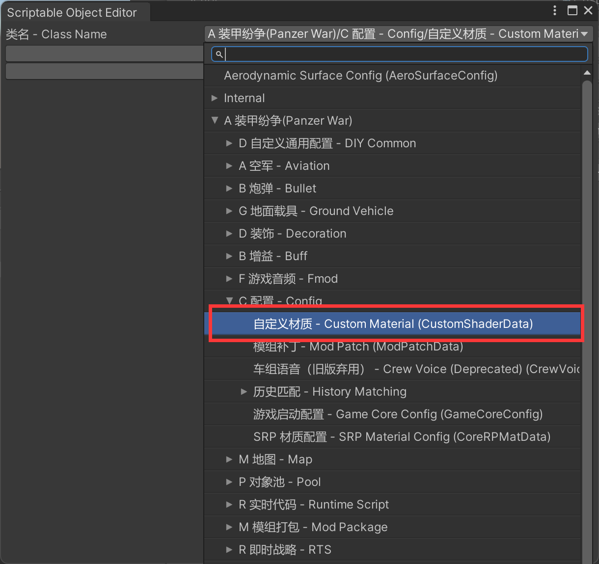\
Pick your custom material. If you do not know about Unity material system, please search about the Unity material and shader graph tutorials.
选择你的自定义材质，如果不了解 Unity 的材质系统，请搜素 Unity Material 以及 Shader Graph 相关教程
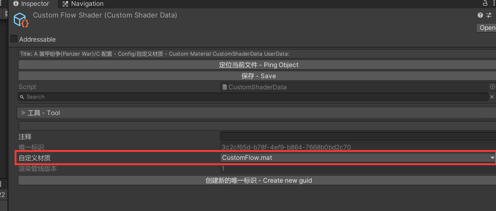
Config Component 配置组件
Add CoreRPMatComponent component to your model and toggle on is component based. You need to assgin the guid from custom shader data to your component. Ensure the urp and hdrp should be different guids.
为你的模型添加 CoreRPMatComponent 组件，勾上基于组件数据，并配置唯一标识为你刚刚创建的自定义着色器配置的唯一标识。值得注意的是，urp 与 hdrp 需要填写不同的guid，且材质文件需要在不同的管线下打包。
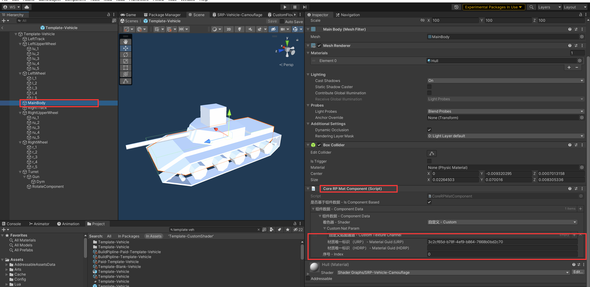
Build 打包
If the shader is only for one vehicle, you can just put the CusomShaderData with VehicleInfo to pack. If it is for public resource purpose, you should pack it separately.
如着色器仅用于一个坦克，建议直接将 CusomShaderData 与 VehicleInfo 放一起打包。 若是一个公用资源，则建议单独打包，然后填上包依赖方式。
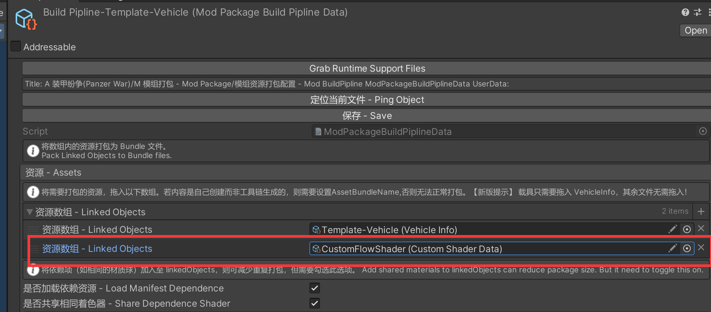
Advance 进阶知识
The logic behind custom shader data
We use the custom material on your custom shader data and copy your material properties to the material you linked on CoreRPMatComponent.
The material you linked will keep the following properties (They will not be overrided by your custom material). If you want to use the following properties you should keep the same name as the following table.
此功能原理：
我们使用你填写在 自定义着色器的材质上的 着色器，以及相关的材质属性（各种勾选项，下拉框的值），并覆盖到你通过 CoreRPMatComponent 关联的材质上。
CoreRPMatComponent 关联的材质上的如下属性，会得到保留。 你的自定义着色器若想使用以下属性，请确保你的自定义着色器的通道名称与下方列表保持一致。
| Channel Name 通道名称 | Type 类型 | Description 介绍 |
|---|---|---|
| _BaseMap | Texture2d | Diffuse map 漫反射贴图 |
| _BumpMap | Texture2d | Normal map 法线贴图 |
| _MaskMap | Texture2d | Mask map Unity URP 的 PBR 贴图 |
| _Smoothness | float | Smoothness 光滑度 |
| _KEYWORDENABLEDIRT | keyword | Enable camouflage 是否启用涂装 |
| _CamoPatternMap | Texture2d | Camouflage Pattern Map 涂装的样式图 |
| _CamoPatternTiling | Vector4 | Camouflage Pattern Tiling 涂装的样式图的缩放比 |
| _CamoBlackTint | Color4 | Color stands for camouflage pattern map back channel 黑色通道对应颜色 |
| _CamoRedTint | Color4 | Color stands for camouflage pattern map red channel 红色通道对应颜色 |
| _CamoGreenTint | Color4 | Color stands for camouflage pattern map green channel 绿色通道对应颜色 |
| _CamoBlueTint | Color4 | Color stands for camouflage pattern map blue channel 蓝色通道对应颜色 |
| _KEYWORD_ENABLE_CAMO_COLOR_TEX | keyword | Enable texture camouflage 是否启用贴图的涂装 |
| _Lerp | float (Clamp in 0-1) | Lerp between camouflage 涂装颜色占比 |
| _DirtRange | float (Clamp in 0-1) | Lerp between dirty 污渍占比 |
| _DirtTex | Texture2d | Dity texture 污渍贴图 |
| _KEYWORDENABLEDIRT | keyword | Enable dirty 启用污渍贴图 |
Some Special Channel Usage 一些特殊通道的用法
_CamoPatternMap 涂装的样式图
Usage Split rgba channel and lerp with tint color
用法： 提取rgba，使用 lerp ，取 tint 颜色
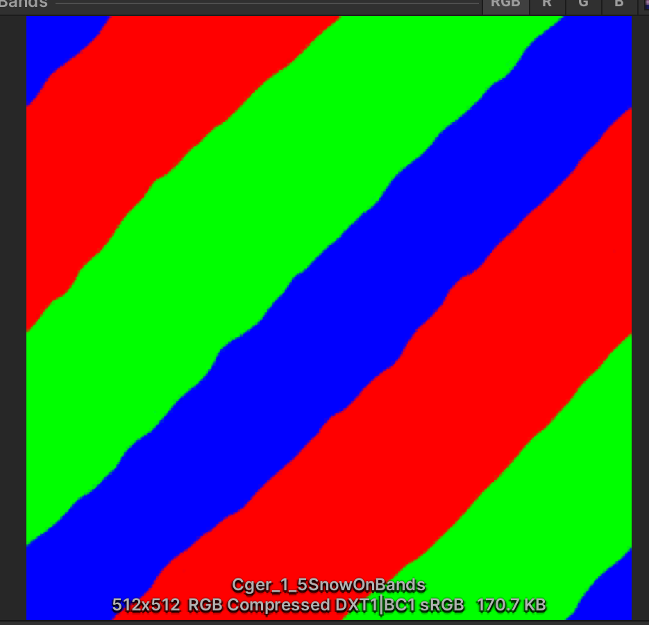
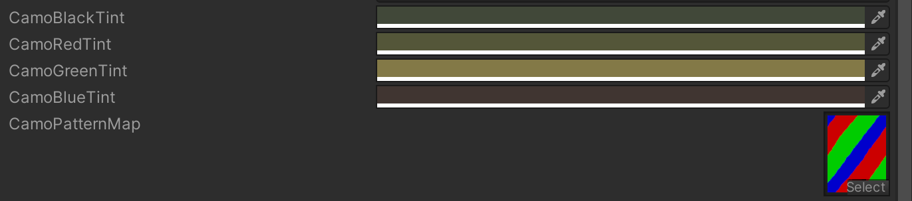
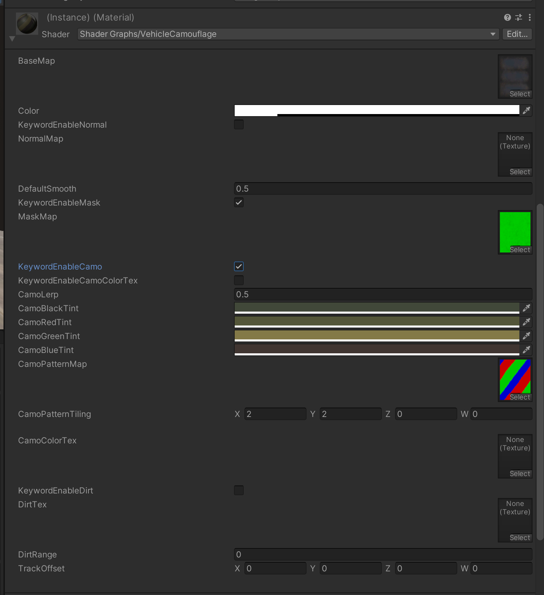
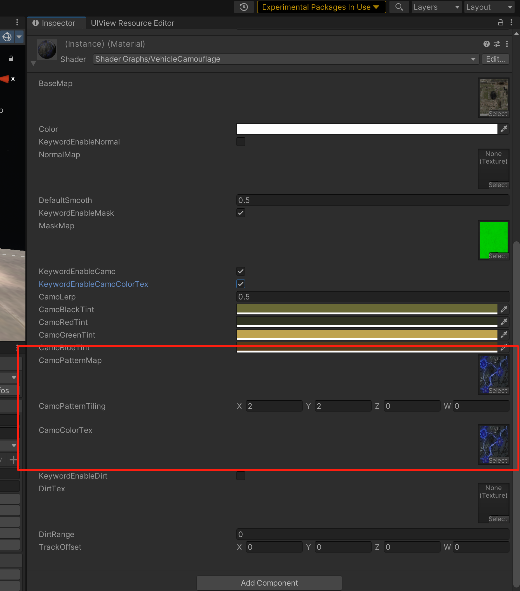
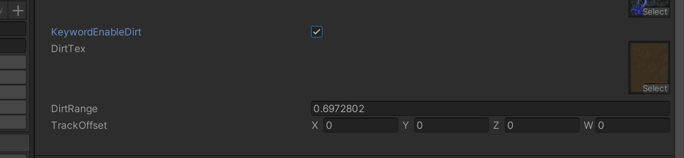
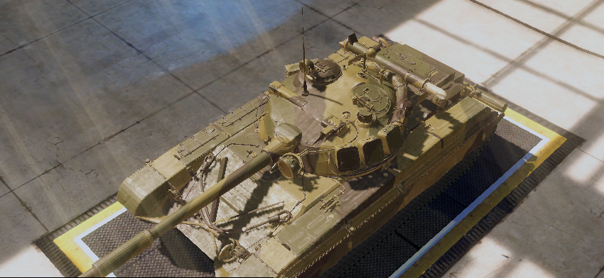
Vehicle Custom Shader 载具自定义着色器
Pick custom shader type as Custom Vehicle Option
着色器类型选择自定义载具选项
Change the channel name to your name defined in shader.
将下面的通道名称，改成你的 Shader 里定义的名称
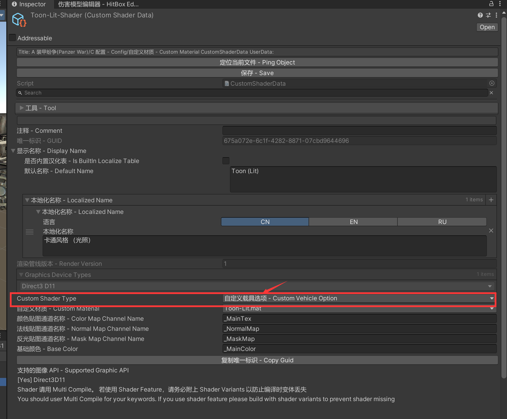
如何适配脏迹效果？
在 _KEYWORDENABLEDIRT 关键词开启时，将载具的 AO 图，和 _DirtTex 以 _DirtRange 的强度，进行混合。